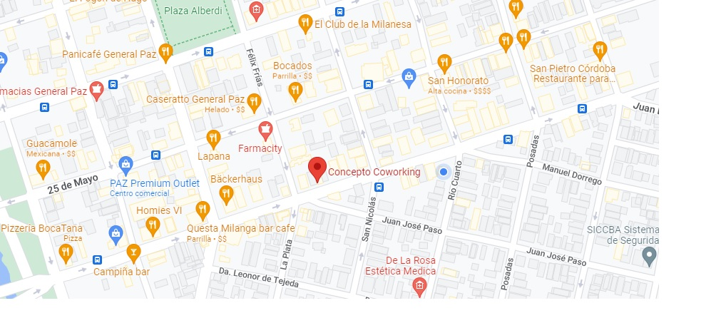

Dra. Antonella M. Bistocco
Especialista en Marcas y Registro; Diplomada en Patentes; Especialista en Sociedades Comerciales. Tutora en Sociedades Comerciales. 7 años de ejercicio en la profesión. Egresada año 2015.
Somos un equipo de profesionales, abogadas y contadoras, dedicadas a la practica profesional y a la docencia. Nuestro equipo técnico-jurídico, con más de 7 años de experiencia en el ejercicio de la profesión, esta constituido por abogadas, contadora, y un equipo técnico en constante formación. En Hola Córdoba!, te ofrecemos el dictado de cursos orientado a profesionales y estudiantes de la carrera de Derecho. Además, contamos con el mejor equipo profesores y tutores, de las materias más difíciles de la carrera de Abogacía, a los fines de prepararte exitosamente en tus exámenes. Brindamos asistencia jurídica en materias de familia, laboral, accidentes, y comercial. Dejanos tu consulta. Formamos parte del cuerpo docente de la Facultad de Derecho, UNC
Especialista en Marcas y Registro; Diplomada en Patentes; Especialista en Sociedades Comerciales. Tutora en Sociedades Comerciales. 7 años de ejercicio en la profesión. Egresada año 2015.
Especialista en Regimen Previsional; Diplomada en Derecho de Familia. Tutora en Derecho de Familia y Sucesiones. 7 años de ejercicio en la profesión. Egresada año 2015.
Magister en Derecho Laboral; Diplomada en Responsabilidad Civil - Daños y Perjuicios. Tutora en Defensa del Consumidor. 7 años de ejercicio en la profesión. Egresada año 2015.
Nos encontramos en Rosario de Santa Fé N° 1000, Barrio General Paz, de la Ciudad de Córdoba, Argentina
